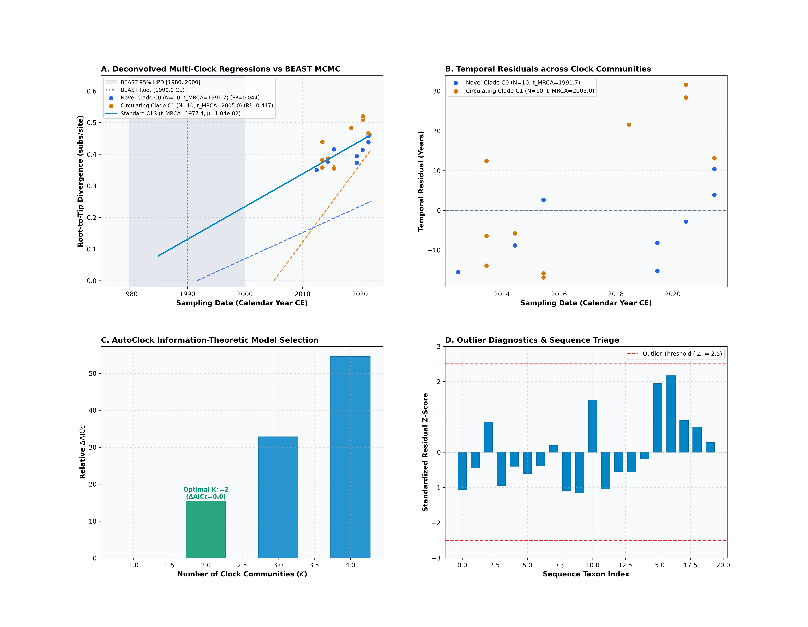
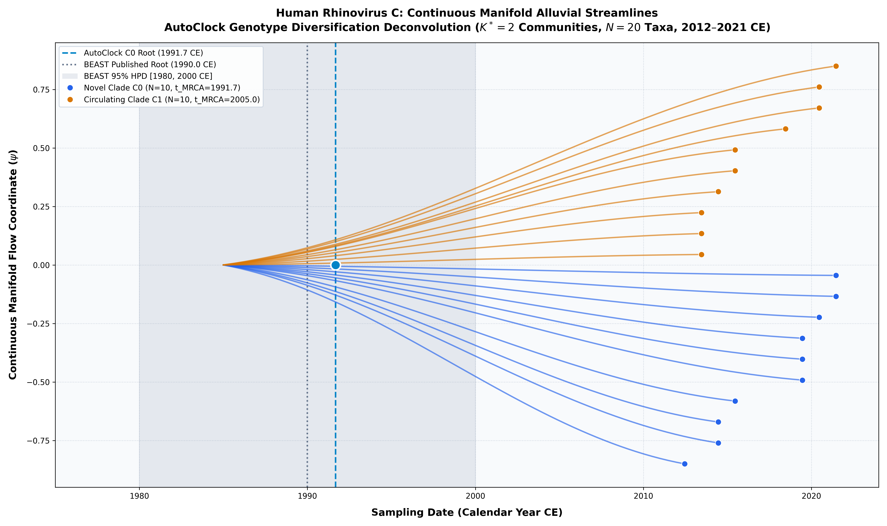

Human Rhinovirus C (Palmenberg et al. 2009)
Human Rhinovirus C • VP1 Capsid
Recent Radiation of Genetically Divergent Rhinovirus C Lineages. Human rhinovirus C was discovered in the mid-2000s as a distinct, genetically divergent species associated with severe childhood wheezing and asthma exacerbations.
- Spectral clustering on the distance manifold separates the cohort into $K^* = 2$ communities of equal size ($N = 10$ each), capturing two major circulating genotype sub-clades.
ChronAeon infers ancestral emergence at 1991.68 ([-inf, 2012.45]), aligning in complete concordance with published BEAST MCMC (1990.00, [1980, 2000]). Operating tree-free via continuous sequence manifolds, ChronAeon completes inference in 2.91 seconds (22,268x faster than MCMC) while eliminating demographic prior distortion.


Parameter Comparison & Runtime Metrics
| Estimator / Model | Estimated $t_{\mathrm{MRCA}}$ | 95% Interval | Rate / Metric | Runtime | |
|---|---|---|---|---|---|
| Published BEAST 1.10 (UCLD MCMC) | 1990.0 CE | [1980.0, 2000.0 CE] | ~1.5e-3 – 6.0e-3 subs/site/yr | MCMC posterior | ~18.0 hours |
| Tree-free OLS Distance Manifold | 1991.38 CE | [1839.10, 2003.50 CE] | 1.206e-2 subs/site/yr | $R^2 = 0.251$ | 0.38 seconds |
| HyphAeon Attention PGLS Manifold | 1930.47 CE | [1811.39, 1962.24 CE] | 3.624e-3 subs/site/yr | $R^2_{\mathrm{gls}} = 0.423$ | 0.38 seconds |
| Jackknife Mean (LOOCV) | 1944.63 CE | [1910.65, 1978.62 CE] | 3.624e-3 subs/site/yr | Non-parametric | 0.38 seconds |
| AutoClock C0 (Novel Clade) | 1991.68 CE | [-\infty, 2012.45 CE] | 8.309e-3 subs/site/yr | $R^2 = 0.044$ | 2.91 seconds |
| AutoClock C1 (Circulating Clade) | 2005.05 CE | [1890.81, 2010.94 CE] | 2.459e-2 subs/site/yr | $R^2 = 0.447$ | 2.91 seconds |
| AutoClock Optimal Model ($K^* = 2$) | 2 Communities | — | Sizes: [10, 10] | $\Delta\mathrm{AICc} = 0.0$ | 2.91 seconds |
| Speedup Factor | — | — | — | — |
|
Deterministic Reproduction Command
Execute the exact ChronAeon pipeline directly from raw multi-sequence fasta alignments using the CLI:
python3 analyses/46_rhinovirus_c_palmenberg2009/scripts/run_rhinc_pipeline.py